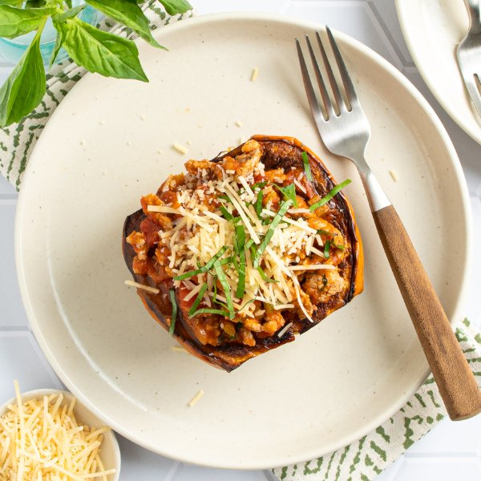

Turkey Bolognese Stuffed Acorn Squash with Parmesan & Basil

Total Time
40 min
Nutrition (Per Serving)
577.6 kcalCalories
44.1 gProtein
47.5 gCarbs
26.7 gFat
Full nutrition table
| Calories | 577.6 kcal |
| Total fat | 26.7 g |
| Saturated fat | 7.2 g |
| Trans fat | 0.2 g |
| Cholesterol | 127.4 mg |
| Sodium | 1088.7 mg |
| Carbohydrates | 47.5 g |
| Fiber | 13.6 g |
| Sugars | 3.5 g |
| Protein | 44.1 g |
| Potassium | 2025.5 mg |
| Calcium | 378 mg |
| Iron | 6.1 mg |
| Vitamin A | 1337.2 IU |
| Vitamin C | 25.9 mg |
| Vitamin D | 23.9 IU |
Cookware
Ingredients
- 2acorn squash
- 4 stickscelery
- 1 small pkgfresh basil
- 1 ½ lbground turkey
- 1 (24 oz) jarmarinara sauce
- ½ cupParmesan cheese, shredded
- black pepper
- extra virgin olive oil
- Italian seasoning
- salt
Steps
- Preheat oven to 500°F and place rack in the center position. Line a baking sheet pan with aluminum foil to make cleanup easier (optional).
- Wash and dry acorn squash; halve lengthwise, trim ends, then scoop out the seeds. Rub the inside of each squash with oil, then season with salt and pepper; arrange halves, cut-side down, on the baking sheet.2 acorn squash
2 tsp extra virgin olive oil
½ tsp salt
¼ tsp black pepper - Place squash in the oven (it doesn't have to be fully heated) and roast until tender, so a knife can easily pierce through the flesh, 20-25 minutes. Remove from oven.
- Meanwhile, preheat a large skillet over medium-high heat.
- While the skillet heats up, wash, dry, trim, and small dice celery.4 sticks celery
- Once the skillet is hot, add oil and swirl to coat the bottom. Add celery, turkey, and spices; cook, breaking the meat apart with a spoon, until browned and crumbly, 4-5 minutes.4 tsp extra virgin olive oil
1 ½ lb ground turkey
2 tsp Italian seasoning
½ tsp salt
½ tsp black pepper - While the turkey is cooking, wash, dry, and pick basil leaves off the stems; roll up crosswise and thinly slice into ribbons.1 small pkg fresh basil
- Add half of the basil (reserving the rest for garnish) and marinara sauce to the skillet; stir to combine and bring to a simmer. Once simmering, reduce heat to low and cook until the bolognese sauce thickens slightly, 2-3 minutes. Remove from heat and cover with a lid to keep warm.1 (24 oz) jar marinara sauce
- To serve, divide squash halves between plates and fill with the turkey bolognese; top with cheese and reserved basil. Enjoy!½ cup Parmesan cheese, shredded